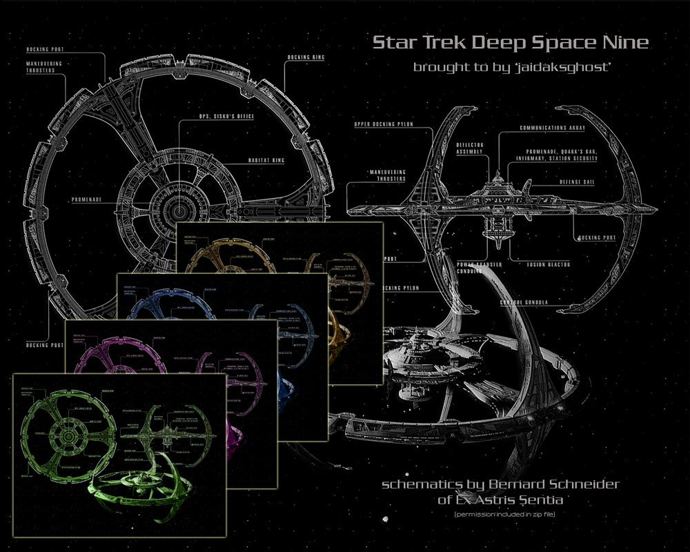

F R A G M E N T A D O
Fragmentado estuvo nominado a cuatro premios en total: "Mtv movie & tv award for best performance in a movie" (2017), "Teen Choice Award al mejor villano" (2017), "Bandung film festival for imported film" (2017) y "Premio Empire a la Mejor Película de Terror" (2018). Aunque fue nominado a muchos premios importantes, lastimosamente no ganó ninguno ya que la película atrajo controversia por su estigmatización de la enfermedad mental. La organización benéfica australiana de salud mental SANE declaró: «Películas como esta van a reforzar una falsa noción estereotipada de que las personas que viven con enfermedades mentales complejas son intrínsecamente peligrosas y violentas». La Sociedad Internacional para el Estudio del Trauma y Disociación publicó una declaración desacreditando el estereotipo de los pacientes peligrosos del trastorno de identidad disociativa (DID) y criticar cómo se hizo la película «a expensas de una población vulnerable que lucha por ser reconocida y recibir el tratamiento efectivo que ellos merecen». Algunas personas con desorden de identidad disociativa se manifestaron en contra de la película (y su comercialización), y al mismo tiempo a favor por la representación de múltiples personalidades como atemorizantes y/o violentas, incluso en una carta abierta al director.
PREMIOS DEL DIRECTOR

